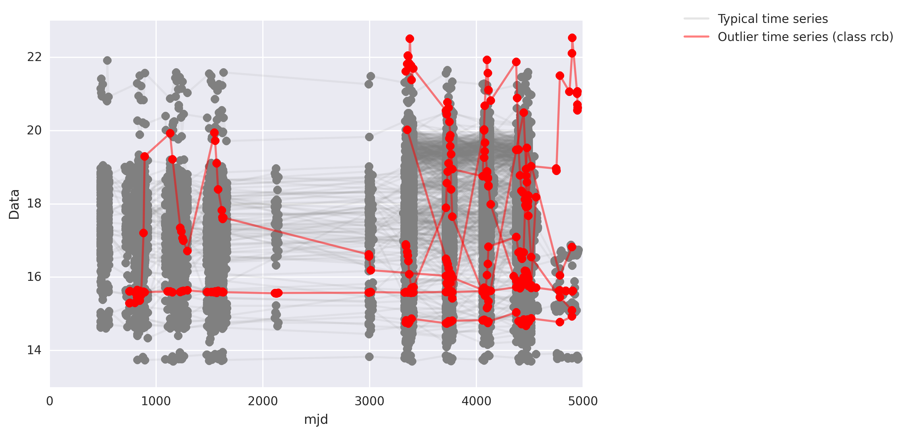

Outlier Detection using Ensemble Learning Methods
An Application to Astronomical Time Series
Wesley Chen, Ryan Lee, Brandon Sim; advised by Pavlos Protopapas
Outlier detection is a problem important in a wide array of domains, ranging from biology to astrophysics to financial markets and fraud detection. Here, we introduce a number of existing and customized outlier detection methods, both supervised and unsupervised, and extend them to create a novel mixture of experts model which performs outlier detection using a network of weighted inputs from the individual methods. Such techniques are applied to the problem of astronomical light curve time series outlier detection. We use time series feature extraction in order to reduce astronomical light curve time series into a lower dimensional feature-space. After the data are projected into the 57-dimension feature space, the outlier detection methods score each data point for outlierliness. FInally, the mixture of experts model uses trained parameters to weight the scores for a final scoring of each point. We found that the mixture of experts performs, on average, better than any individual expert in terms of identifying both artificial and out-group (rcb) class outliers.
{kind=link}
Figure H1. Outlier and typical lightcurve timeseries Typical time series of the astronomical light curves are shown (gray). Timeseries from the rcb class (red), considered arbitrarily as the outlier class, are plotted for comparison.
Below is our screencast:
Code can be found on GitHub.
This project was undertaken over the course of one semester as part of the course Applied Computation 299r, for partial fulfillment of the Harvard Institute of Applied and Computational Sciences Master of Science program.